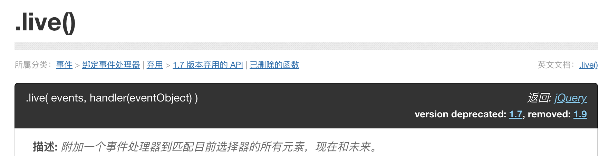
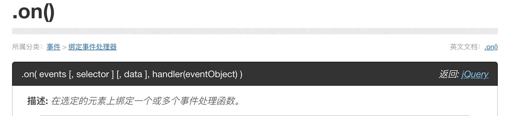
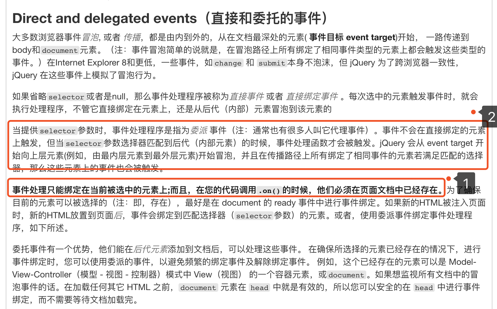
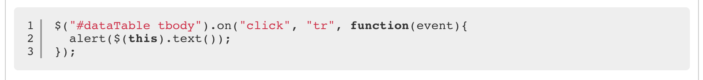

最近在做项目的时候发现的一个问题，通过ajax动态加载出来的一个button值绑定不了点击事件。我使用的是datatables这款表单插件,表单内容是通过ajax动态渲染出来的。
解决方案：
通过Google，我发现在jquery1.7版本之前通常使用 .live() 这个事件，但是这个方法在1.9版本被移除了

所以，我们需要找一个替代的方法 .on()，首先让我们先来看下这个事件的介绍

看介绍，这两个事件做的事情差不多，然后我在具体的介绍中发现了这个

第一点：.on()事件绑定的元素必须是页面中已经存在的，也就是静态html中存在的元素，才会被绑定。
第二点：通过selector参数进行代理，什么意思呢？就是说当这个参数不为空的时候，.on()绑定的事件不会直接在绑定的元素上触发，它会自动匹配内部节点，然后在该节点触发
怎么理解第二点呢？通俗点说就是：一个父亲(已绑定静态页面的元素)管着一大堆儿子(动态加载出来的元素)，我们首先找到了父亲，然后告诉他其中一个儿子的名字和要干的事情(具体绑定的事件)，然后他就会去让你指定的这个儿子去干。这样好理解吧。
到这里，问题就解决了。具体写法像这样：

以上是我解决该问题的整个过程，希望能够帮助到你，共同进步！！！
本文参考文档：